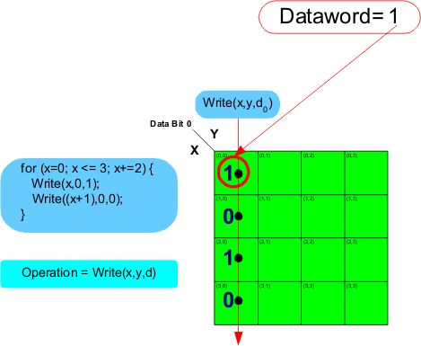

Checkerboard data sequence for one column
The first goal is to create a for loop that will create an alternating data sequence as the pattern steps down the column. This is done by operating on two addresses in the body of the for loop. Since two address steps are occurring for every loop the incremented in the for loop must be doubled. Also to make sure the pattern steps to the second address in the for loop body a 1 is added to the x address in the second operation. Also note that the data has been inverted in the second operation. In the beginning example shown in the figure below the y address is hard coded to a 0.
